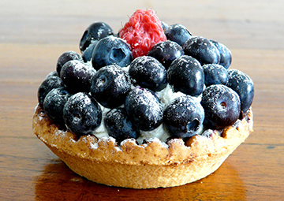

「いつもの。」が通じる、あなたのカフェ。

当店のパティシエが作る！今月のおすすめスイーツ．
ブルーベリーのタルト
採れたてのブルーベリーをたくさん使ったブルーベリーのタルトです。 苦目のコーヒーとよく合います。
¥ 500お知らせ
2017.2.10
Dummy Cafeがオープンしました。
ついにDummy Cafeがオープンしました。みなさん是非コーヒーを飲みに来て下さいね。2017.1.25
Dummy CafeのWEBサイトが完成しました。
本日、Dummy CafeのWEBサイトを公開しました。2017.1.21